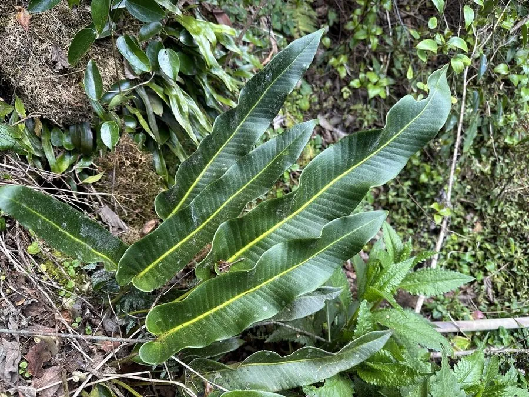

蕨类与裸子植物 · 植物界
庐山石韦 Pyrrosia sheareri

水龙骨科石韦属附生蕨类，叶片宽大、背面密被黄褐色星状毛，附生于树干和岩壁，是中药石韦的主要来源之一。
- 分类
- 门蕨类植物门纲水龙骨纲目水龙骨目科水龙骨科属石韦属
- 栖息环境
- 海拔 500–2000 米的山地树干、岩壁与石缝，喜湿润半阴
- 地理分布
- 中国长江流域及以南各地
- 保护级别
- 暂无评估；野生资源因药用采挖减少，未被列入国家重点保护名录
物种志
庐山石韦为水龙骨科石韦属附生蕨类，植株高二十至四十厘米，根状茎横走，密被褐色鳞片。叶片远生，叶柄粗壮，叶片宽披针形至长椭圆形，革质，表面深绿，背面密被黄褐色星状毛。孢子囊群圆形，密生于叶片背面，成熟时黄褐色，孢子期夏秋季。
庐山石韦分布于中国长江流域及以南各地，多生于海拔五百至两千米的山地树干、岩壁和石缝中。它喜温暖湿润和半阴环境，耐旱、耐瘠薄，适宜附生于树皮和岩石表面。叶片宽大、背面金褐，是优良的附生观叶植物；全草在中药中称石韦，有利水通淋、清肺止咳之效，是常用中药材。由于野生资源因采挖而减少，人工栽培逐渐增多。
形态与习性
- 株高20–40 cm，根状茎横走
- 叶形宽披针形，背面金褐色
- 孢子期夏秋季，囊群圆形
- 光照喜半阴散射光
- 水分喜湿润，耐短期干旱
- 土壤附生于树皮与岩石
- 主要用途附生观叶，全草入药
趣味知识
- 庐山石韦的叶片背面密被黄褐色星状毛，远看像镀了一层金粉。
- 它附生于树干和岩壁，靠根状茎攀附和吸收雨水生存。
- 石韦是传统中药，庐山石韦因叶片宽大、有效成分高而被视为佳品。